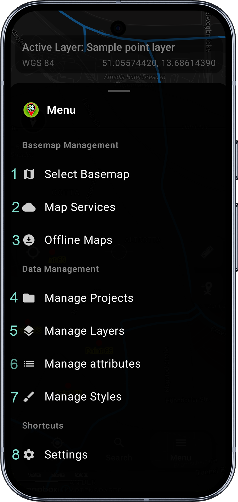
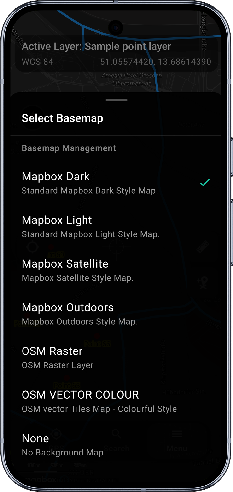
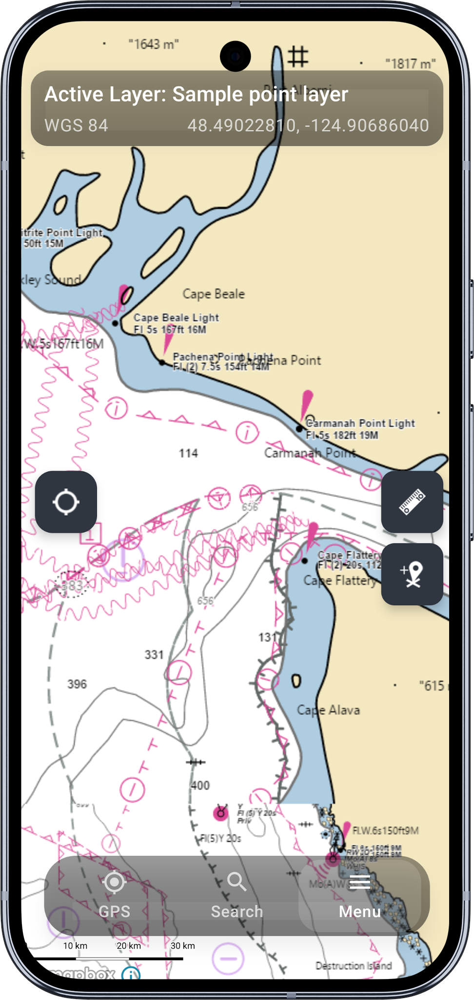
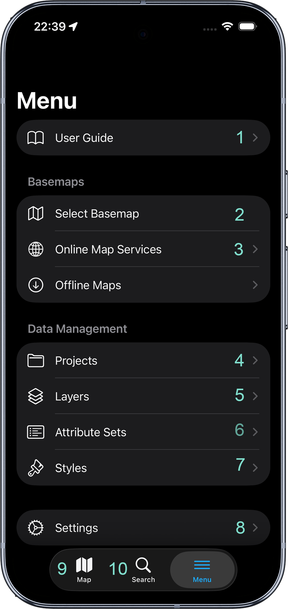
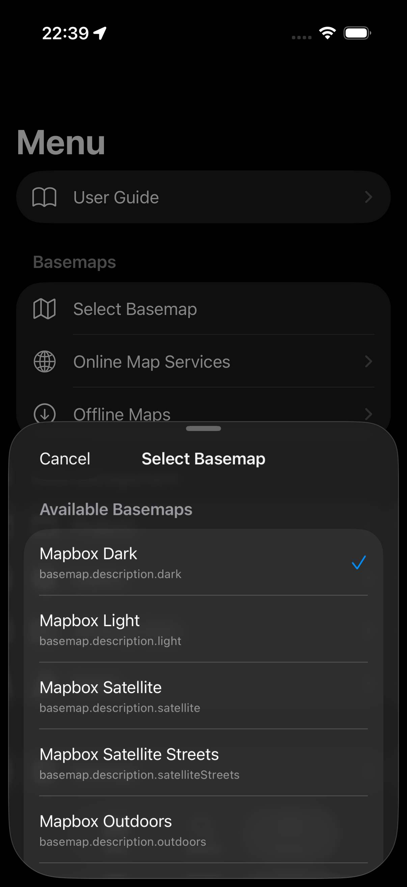

Main Menu
- Android
- iOS
Tap the Menu tab at the bottom of the screen (or top on tablets) to access the main menu, allowing you to switch between the main app modules.

The main menu is divided into 3 sections: Basemap Management, Data Management and Shortcuts. Below is the description of the elements included in each section.
1 - Select Basemap
This section allows switching between the basemaps. The default Mapbox basemap theme is derived from the dark or light theme of the device. The basemap can be changed by tapping on the basemap name on the list. One of the options allows also to switch off the background map completely.

2 - Online Map Services
On top of predefined Mapbox maps Mapit Professional is able to display additional layers of information available in a form of a service. At this moment Mapit supports WMS, WFS, WMTS and XYZ.
The Online Services module has got few tabs. Each tab does contain some sample services - it is up to user to keep them in or remove if they are not relevant for their area. Users are able to add their own services. Please use the 'Add' button to start the process. Some services need more information than others, the most important is the service endpoint URL.
More information about adding and managing online services can be found here.
3 - Offline Maps
If you are working in remote areas and need to use a background mapping without the Internet connection you can use so called mbtiles files to do so. To
use mbtiles in Mapit you need to prepare your data using e.g. qGIS or other 3rd party apps like Maperitive or MapTiler. You can prepare that way raster or
vector data.
Ready mbtiles must be transferred to the internal device memory and added to the list by pressing the 'Add' button.

4 - Manage Projects
Projects are the primary organisational unit within Mapit GIS Professional and should be used as the standard mechanism for managing survey and spatial data. Each project is stored in OGC GeoPackage (GPKG) format, providing a standards-compliant, portable container for spatial layers, attributes, and associated configuration. Projects enable clear separation of datasets, controlled data handling, and consistent application of settings across different surveys or workstreams.
Projects support full import and export functionality, allowing them to be treated as discrete data assets. Exported projects can be securely backed up to local or network storage, transferred between devices, or archived in accordance with organisational data retention policies. Users may create, switch between, and remove projects as required, enabling flexible working while maintaining strong data governance controls.
After the installation of Mapit Professional the Projects contains sample GeoPackage database called default, and within the Manage Layers activity following three sample layers are present:
- Sample point layer,
- Sample line layer and
- Sample polygon layer.
These layers are integral part of the selected project (GeoPackage file). The default project which we may refer also to as the 'database' is fully functional and users can use it straight for recording some data, but generally it can be removed and user can start defining its own data structure in terms of layers, attribute sets etc.
User can select one of the listed GeoPackage database and make it „active" by selecting relevant option on the context menu. The "active" state can be change back to "non-active" by pressing again the same option.
Create a New Project
- Open Mapit GIS Professional.
- Tap the Menu tab → Project Management.
- Tap Create New Project - use
+button in the bottom right of the screen. - Enter a descriptive name for the project (e.g.,
Tree SurveyProject) and optionally provide a description.
Please try to avoid special characters when naming the project.
- Confirm creation.
Each project is stored as a GeoPackage (GPKG), which is portable and compatible with desktop GIS software such as QGIS or ArcGIS. Projects allow logical separation of data, making surveys more manageable and audit-friendly. They can be exported and shared using the context menu.
5 - Manage Layers
Using this module, you can manage the layers in the current project.
You can add, remove, hide, show, or import data from a file as well as export collected data to a CSV, GeoJSON or GeoPackage file (includes all the layers).
To select the layer please tap on the list element. The selected row will be highlighted, and the context menu will be displayed at the top of the screen.
Standard Android Navigate Up button when the layer is selected it clears out the selection and closes the context menu. If the layer is not selected it closes the Layer Management and user is navigated back to the map. The same effect can be achieved using Android "back" button.
To be able to add new features to the layer it is required to have an active layer.
The active layer automatically becomes visible on the map, even if the visibility is set to none.
Only one layer can have active status at a time when you activate one layer if there was any other layer active before it will be deactivated automatically.
If you want to deactivate a layer and do not make another layer active please select the active layer and press change active status menu item ones again.
The information about current active layer is displayed on the status bar of the Map Screen.
If there is a need to temporarily hide some layers on the map users can easily change the visibility state for each layer to change layer visibility, select the layer then press the eye item on the context menu. Active layer is always visible on the map even if the visibility is set to none.
Adding new layer
Please use '+' button to add new layer to the active project.
When you click the button Add Layer dialog will be displayed. Necessary information like layer name and geometry type POINT, LINESTRING or POLYGON must be provided.
Please press OK button to see the layer added to the list.
Newly created layer automatically will be set as "visible" - and it is symbolised by the eye icon on the right-hand side of the layer name.
The newly created layer is ready to be activated and we can start gathering geometry objects for it like registering new points or creating lines or polygons accordingly to the geometry type.
However, if the intension is also to gather some attributes data - and usually that's the case, the layer must be further customised by adding some fields and optionally link those fields with the attribute set in case we would like to enter the data using predefined lists, like dropdown lists or multi-selection lists.
In general - each filed will be presented as standard Text Box on the entry form unless is linked to the attribute set. The exception from this rule is the BOOLEAN type of the field, which is rendered on the data collection form as a Yes and No options.
Layer Fields
Each layer in Mapit Professional represents a table within the GeoPackage database, containing both geometry (a core GIS feature) and a customizable set of attribute fields. These attribute fields allow users to capture additional information for each spatial feature, such as names, descriptions, or measurements.
For every layer, you can define the fields that best suit your data collection needs. Each field will appear on the data entry form when working with that layer, enabling users to record key attributes for every entity in the table.
By carefully planning your layer fields, you can ensure efficient data capture and meaningful records for analysis and reporting.
To remove selected field please select it from the list than use "Delete" option from the context menu.
The field name cannot be changed - if you need to correct field name it must be removed and added one more time. Please note that whatever information was already collected for that field will be removed with it as well.
6 - Manage Attributes
The concept of the Attribute Sets came from the fact that some information is very often entered multiple times during the surveys. So for example if there was a need of gathering information about the colours of the cars parked along the streets - instead of typing the colour names each time you open the form you would probably prefer to have a predefined list of colours and when entering the data you would simply choose required value from the dropdown list.
Utilizing the functionality described above you can also make your data more consistent, typos free and better structured, and you can achieve this simply linking your layer field with the attribute set field.
In Mapit GIS you need to use attribute set in 3 cases:
- To create dropdown list of predefined values (single selection from the dropdown list)
- To create multi-selection list of predefined values (checkboxes)
- To utilize barcode and QR scanner for the TEXT field type
7 - Manage Styles
Allows styling of the vector layers. The styling is based on the specific value of the attribute. Detailed guide how to achieve this will be added soon.
8 - Settings
Mapit Professional settings allows users to configure the app to the specific needs. You can hide or show certain elements of the UI like zoom control or set preferred measurement units and preferred coordinate system. The settings are split into some categories to simplify navigation.
Tap the Menu tab at the bottom of the screen (or top on tablets) to access the main menu, allowing you to switch between the main app modules.

The main menu is divided into sections: User Guide, Basemaps, Data Management and Settings. At the bottom of the screen is the tab bar with Map (9) and Search (10) tabs.
1 - User Guide
Opens the built-in user guide with quick access to all the documentation sections visible in this menu.
2 - Select Basemap
Switch between the available basemaps. The default Mapbox basemap theme is derived from the dark or light theme of the device. Tap a basemap name to select it. One of the options allows switching off the background map completely.

3 - Online Map Services
On top of predefined Mapbox maps, Mapit Professional can display additional layers of information available as online services. Mapit supports WMS, WFS, WMTS and XYZ.
The Online Services module has several tabs. Each tab contains some sample services - it is up to the user to keep them or remove if they are not relevant for their area. Tap the '+' button to add your own services.
More information about adding and managing online services can be found here.
4 - Projects
Projects are the primary organisational unit within Mapit GIS Professional. Each project is stored in OGC GeoPackage (GPKG) format, providing a standards-compliant, portable container for spatial layers, attributes, and associated configuration.
Projects support full import and export functionality, allowing them to be treated as discrete data assets. Exported projects can be securely backed up, transferred between devices, or archived.
5 - Layers
Manage the layers in the current project. You can add, remove, hide, show, or import data from a file as well as export collected data to CSV, GeoJSON or GeoPackage.
To add new features to a layer it is required to have an active layer. The active layer automatically becomes visible on the map, even if visibility is set to none. Only one layer can have active status at a time.
6 - Attribute Sets
Define predefined lists of values for data entry, making your data more consistent and structured. You can create dropdown lists, multi-selection lists, and utilise barcode/QR scanning by linking your layer field with the attribute set field.
7 - Styles
Style the vector layers based on the specific value of an attribute. See Layer Styling for details.
8 - Settings
Configure the app to your specific needs. You can hide or show certain elements of the UI like zoom control, or set preferred measurement units and coordinate system.
9 - Map
The Map tab in the bottom tab bar. Tap to return to the map view.
10 - Search
The Search tab in the bottom tab bar. Tap to search for a place or address.